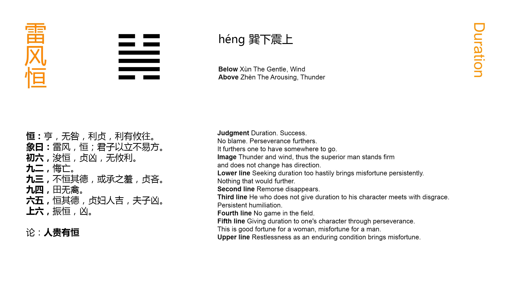

Chinese: 恒 ䷟ héng

Héng ䷟ indicates successful progress and no error (in what it denotes). But the advantage will come from being firm and correct; and movement in any direction whatever will be advantageous.
1. The first SIX, divided, shows its subject deeply (desirous) of long continuance. Even with firm correctness there will be evil; there will be no advantage in any way.
䷟ changing to ䷡
Matching Line 1 in Adjacent Hexagram: ䷞
2. The second NINE, undivided, shows all occasion for repentance disappearing.
䷟ changing to ䷽
Matching Line 2 in Adjacent Hexagram: ䷞
3. The third NINE, undivided, shows one who does not continuously maintain his virtue. There are those who will impute this to him as a disgrace. However firm he may be, there will be ground for regret.
䷟ changing to ䷧
Matching Line 3 in Adjacent Hexagram: ䷞
4. The fourth NINE, undivided, shows a field where there is no game.
䷟ changing to ䷭
Matching Line 4 in Adjacent Hexagram: ䷞
5. The fifth SIX, divided, shows its subject continuously maintaining the virtue indicated by it. In a wife this will be fortunate; in a husband, evil.
䷟ changing to ䷛
Matching Line 5 in Adjacent Hexagram: ䷞
6. The topmost SIX, divided, shows its subject exciting himself to long continuance. There will be evil.
䷟ changing to ䷱
Matching Line 6 in Adjacent Hexagram: ䷞
The subject of this hexagram may be given as perseverance in well doing, or in continuously acting out the law of one's p. 127 being. The sixth Appendix makes it a sequel of the previous figure. As that treats, it is said, of the relation between husband and wife, so this treats of the continuous observance of their respective duties.
Xián ䷞, we saw, is made up of Gèn ☶, the symbol of the youngest son, and Duì ☱, the symbol of the youngest daughter, attraction and influence between the sexes being strongest in youth. Héng ䷟ consists of Xùn ☴, 'the oldest daughter,' and Zhèn ☳, the oldest son. The couple are more staid. The wife occupies the lower place; and the relation between them is marked by her submission. This is sound doctrine, especially from a Chinese point of view; but I doubt whether such application of his teaching was in the mind of king Wén. Given two parties, an inferior and superior in correlation. If both be continuously observant of what is correct, the inferior being also submissive, and the superior firm, good fortune and progress may be predicated of their course.
Line 1 has a proper correlate in 4; but between them are two strong lines; and it is itself weak. These two conditions are against its subject receiving much help from the subject of 4. He should be quiet, and not forward for action.
Line 2 is strong, but in the place of a weak line. Its position, however, being central, and its subject holding fast to the due mean, the unfavourable condition of an even place is more than counteracted.
Line 3 is strong, and in its proper place; but being beyond the centre of the trigram, its subject is too strong, and coming under p. 128 the attraction of his correlate in 6, he is supposed to be ready to abandon his place and virtue. He may try to be firm and correct, but circumstances are adverse to him.
Line 4 is strong in the place of a weak line, and suggests the symbolism of the duke of Zhou.
The weak 5th line responds to the strong 2nd, and may be supposed to represent a wife conscious of her weakness, and docilely submissive; which is good. A husband, however, and a man generally, has to assert himself, and lay down the rule of what is right.
In line 6 the principle of perseverance has run its course; the motive power of Zhèn ☳ is exhausted. The line itself is weak. The violent efforts of its subject can only lead to evil.